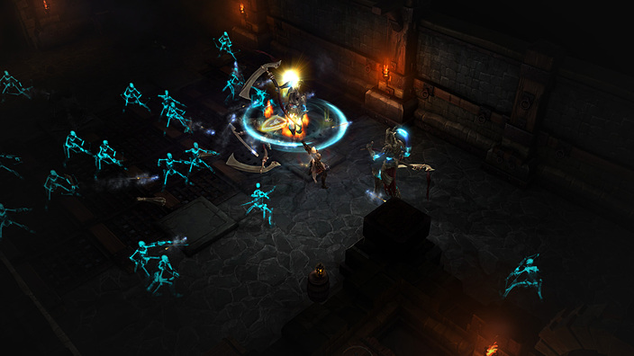

TRABALHO DE FORMATURA - BCC (IME / USP):
PROPOSTA DE TRABALHO
Alunos:
Daniel Yoshio Hotta
Rafael Gonçalves Pereira da Silva
Ricardo Akira Tanaka
Orientadores:
Prof. Marco Dimas Gubitoso
Wilson Kazuo Mizutani
1. INTRODUÇÃO
A área de inteligência artificial contribui de maneira ampla no campo dos jogos eletrônicos, em grande parte servindo para a geração de estratégias e comportamentos de oponentes ao jogador. Considerando a prevalência de sistemas com inteligência artificial no cotidiano atual - aparelhos eletrônicos como celulares, televisores e outros eletrônicos com assistentes virtuais, reconhecimento facial, etc. - e o constante crescimento do mercado de jogos eletrônicos global, a combinação de inteligência artificial e jogos eletrônicos representam parte relevante na área da computação.
2. OBJETIVOS
Dentro do escopo de oponentes de jogadores em jogos eletrônicos,
foi definido que o trabalho terá foco em desenvolver algoritmos
de inteligência artificial com uma abordagem evolutiva e
adaptativa, para utilização em um jogo eletrônico, que sejam
capazes de gerar inimigos com dificuldades crescentes, capazes
de se adaptarem à estratégia e habilidades do jogador, sem
prejudicar a jogabilidade, isto é, não é o objetivo produzir um
oponente impossível de ser vencido.
Logo, pretende-se produzir um jogo em Godot Engine com diferentes
modos de jogabilidade, a partir de recursos gráficos (assets)
disponíveis sob licenças de software livre, com inimigos
utilizando algoritmos evolutivos que se adaptam ao jogador, e
utilizando diversos gêneros, alguns apresentados a seguir:
-
Tower Defense
Jogo baseado na defesa de território, onde o jogador deve posicionar defesas em um caminho pelo qual ondas de oponentes irão passar e impedir o seu avanço.
Figura 2.1 - Kingdom Rush, tower defense
-
Hack and Slash
Jogo de ação onde o jogador precisa derrotar diversos inimigos, em geral utilizando de armas brancas longas ou magia, em um mapa tradicionalmente em visão isométrica.
Figura 2.2 - Diablo III, Hack and Slash
-
Beat'em Up
Jogo de ação onde o jogador precisa derrotar diversos inimigos, em geral sem armas, tradicionalmente em visão lateral, onde o mapa rola lateralmente.
Figura 2.3 - Streets of Rage 4, Beat'em Up
-
Real-Time Strategy ou Turn-based Strategy
Jogo de estratégia em tempo real ou em turnos, onde o jogador precisa explorar o mapa, gerenciar recursos e exércitos, visando defender seu território ou atacar os oponentes.
Figura 2.4 - Starcraft II, Real-Time Strategy
Figura 2.5 - Civilization VI, Turn-Based Strategy
{kind=link}
{kind=link}
{kind=link}
{kind=link}
3. PASSOS E CRONOGRAMA
| Passos | Cronograma |
|---|---|
|
Junho Julho |
|
Agosto |
|
Setembro Outubro Novembro |
|
Dezembro |
Marco Dimas Gubitoso
Wilson Kazuo Mizutani
Daniel Yoshio Hotta
Rafael Gonçalves Pereira da Silva
Ricardo Akira Tanaka